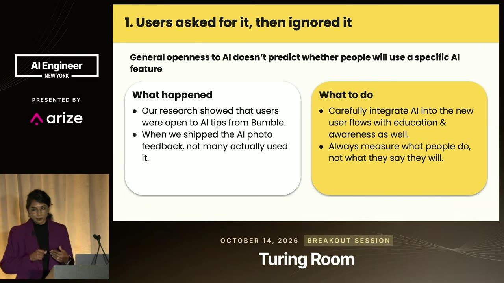
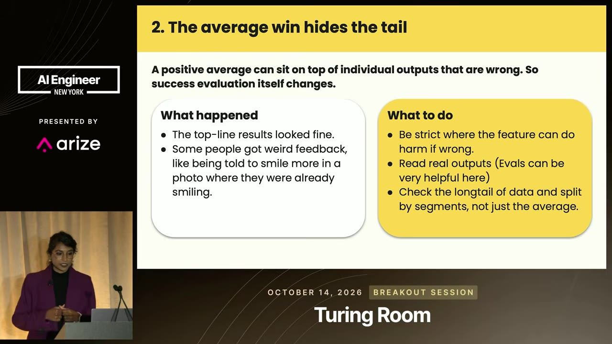
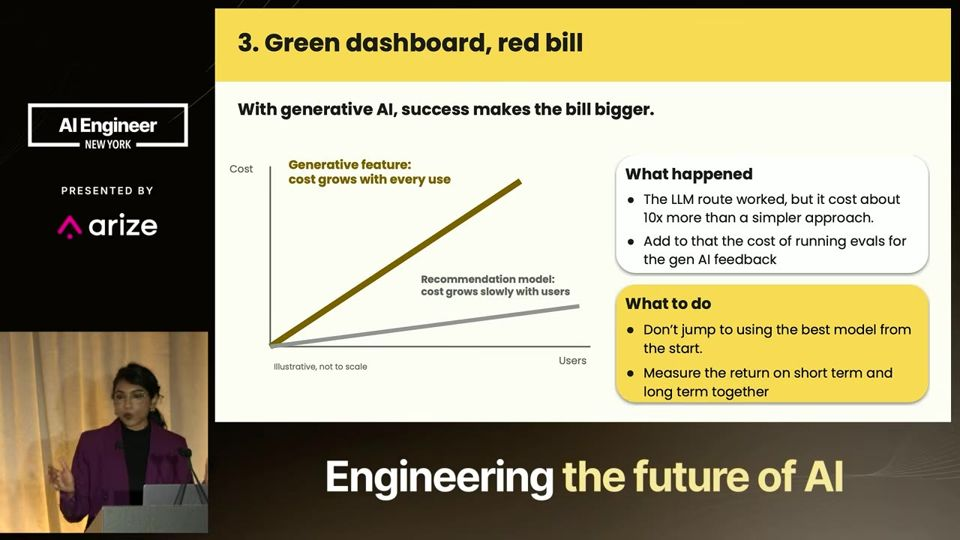
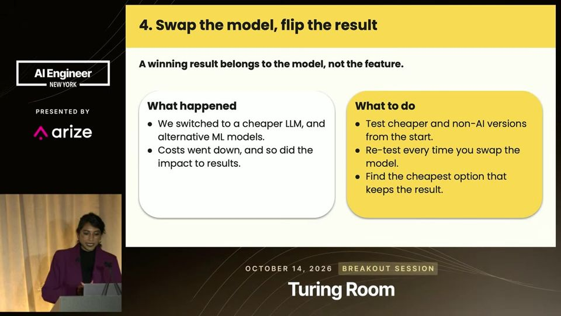
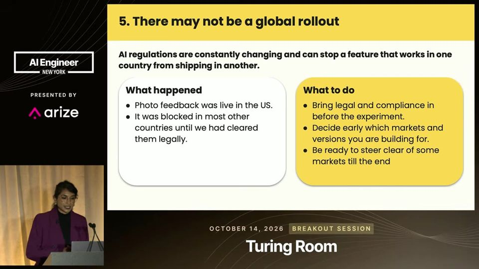

essencial do dia: O Bumble mostra por que um A/B positivo escondeu baixo uso, custo alto e saídas ruins, com cinco perguntas para checar.
Depois do A/B positivo, o que checar antes de lançar IA
78% Wanted This AI Feature. Almost Nobody Used It
Teste A/B positivo com IA é o começo do trabalho: confira uso real, casos extremos, custo, modelo e mercado antes de lançar.
Depois deste talk você consegue aplicar as cinco perguntas do Bumble antes de lançar um recurso de IA, de uso real a custo, modelo e mercado
Em 3 frases
A equipe do Bumble testou em A/B uma função de feedback de fotos com IA e viu resultado médio positivo, mas só 10 a 15% dos usuários a usaram, apesar de 78% dizerem que queriam.
A média escondia saídas ruins (mandar quem já sorri sorrir mais), o melhor modelo custava cerca de 10x mais, o modelo barato reduziu o efeito e a regulação travou o lançamento fora dos EUA.
A palestrante fecha com cinco perguntas para qualquer teste de IA: há uso real, leu saídas reais, o custo compensa, o modelo é viável e o mercado permite lançar.
Antes de ler
Quem diz que quer não necessariamente usa
Na pesquisa, 78% dos usuários disseram que queriam feedback de IA sobre as fotos. No teste A/B, só 10 a 15% usaram. Abertura à IA não prevê uso. A equipe passou a oferecer o feedback dentro dos fluxos existentes, como na hora de adicionar fotos ou quando faltavam matches, e a adoção subiu.


(ampliar imagem)A média positiva esconde a cauda
O resultado geral era bom: mais fotos adicionadas e mais edições de perfil. Mas a IA mandava sorrir mais quem já sorria. A equipe criou guardrails (limites) sobre o que a IA não pode sugerir, como cor de pele ou altura, leu saídas reais com evals (avaliações) e passou a olhar segmentos por gênero e idioma.


(ampliar imagem)Painel verde, fatura vermelha
O melhor modelo custava cerca de 10x mais que uma opção simples, e rodar evals somava custo. Em IA generativa, quanto mais gente usa, mais a conta cresce. Em ML clássico, o custo pesa no início. A palestrante sugere definir se o objetivo é retorno de curto prazo ou aposta de longo prazo, pois isso define o orçamento.


(ampliar imagem)Mais 2 ideias deste talk
O ganho veio do modelo, não do conceito
Ao trocar para um modelo mais barato, o custo caiu e o impacto também. O resultado do teste A/B dependia do modelo testado. A equipe montou evals para comparar modelos, custos, conjuntos de dados e versões de prompt rapidamente, e acabou numa opção barata que ainda dava bom resultado.


(ampliar imagem)Pode não haver lançamento global
A regulação de IA varia por país e há risco legal e financeiro em descumpri-la. O Bumble lançou nos EUA e parou. A palestrante cita o Muse AI da Meta, disponível só nos EUA e no Canadá. Ela defende pensar em conformidade legal desde o início do projeto.


(ampliar imagem)O talk é relato de uma só empresa e de um só recurso, sem dados de efeito, tamanho de amostra ou intervalos de confiança. Os números de custo (cerca de 10x) e de adoção são aproximados e não têm detalhe. A palestrante também fala em nome do Bumble, então a narrativa de aprendizado tende a ser favorável. As lições são úteis, mas servem como lista de verificação, não como prova.
Teste você mesmo
Responda de cabeça antes de abrir. Lembrar com esforço é o que fixa.
- lembrar O que a equipe do Bumble descobriu sobre o uso do recurso de feedback de fotos?
Ver resposta
Na pesquisa, 78% disseram querer o feedback de IA, mas no teste A/B só 10 a 15% usaram. Querer não prevê usar, e a equipe passou a oferecer o recurso dentro de fluxos já existentes.
- aplicar Como você checaria o custo e o modelo de um recurso de IA seu antes de escalar?
Ver resposta
Calculando o custo total por usuário, incluindo evals, e testando um modelo mais barato antes de escalar o melhor. No Bumble, o melhor modelo custava cerca de 10x mais, e trocar para o barato reduziu custo e impacto.
- criticar Por que as lições do talk valem como lista de verificação, mas não como prova?
Ver resposta
É o relato de uma empresa e de um recurso, sem tamanho de amostra, efeito ou intervalo de confiança. Custo e adoção são aproximados, e a palestrante fala em nome do Bumble, então a narrativa tende a ser favorável.
Ler saídas reais de um recurso de IA por segmento
Você precisa de: Claude ou ChatGPT e 20 entradas reais ou realistas de segmentos diferentes
- Escolha uma tarefa em que a IA dá feedback ou recomendação, como revisar o texto de um perfil.
- Rode 20 entradas de segmentos diferentes (idioma, gênero ou país) e leia cada saída.
- Marque as saídas ruins ou inadequadas e agrupe por segmento.
- Escreva 3 regras do que a IA nunca deve sugerir e repita o teste com elas no prompt.
Deu certo se: Você tem a lista de saídas ruins por segmento e um prompt com guardrails que reduziu essas saídas.
O que fazer com isso
- Meça uso real do recurso de IA no teste A/B e compare com o que a pesquisa prometia, antes de decidir lançar.
- Leia amostras de saídas reais por segmento (idioma, gênero, país) e defina guardrails para o que a IA nunca deve sugerir.
- Calcule o custo total por usuário, incluindo evals, e teste um modelo mais barato antes de escalar o melhor modelo.
- Consulte o jurídico sobre os mercados permitidos antes de planejar o lançamento global.
Conversa com outros talks
- Proteger agentes com camadas fora do modelo · 12 out · em comum: Guardrails de entrada e saída
- IA em banco: achar os donos da decisão na semana um · 16 out · em comum: Data slice
- Como um fundo mede o retorno de IA · 25 out · em comum: Teste A/B